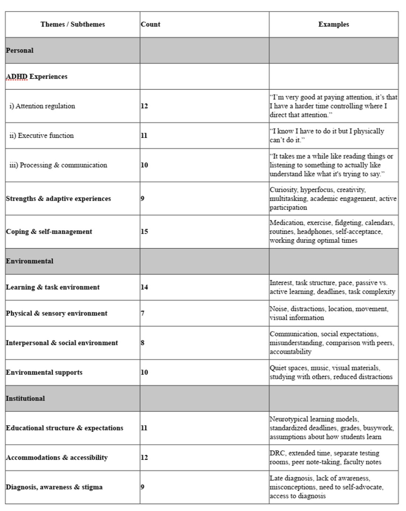
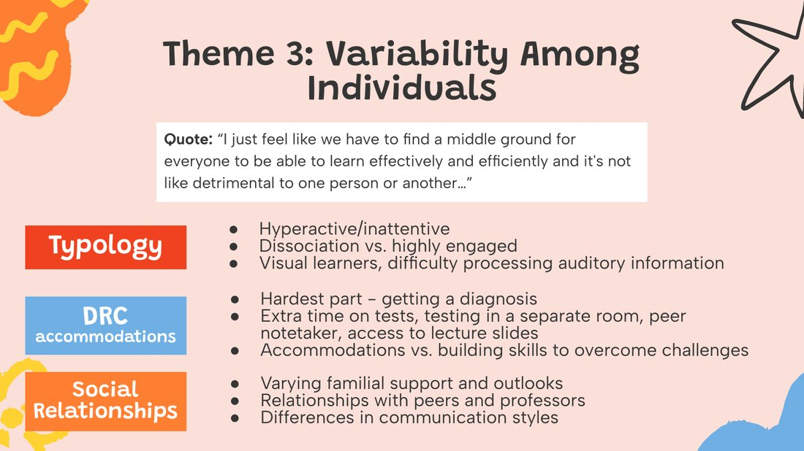
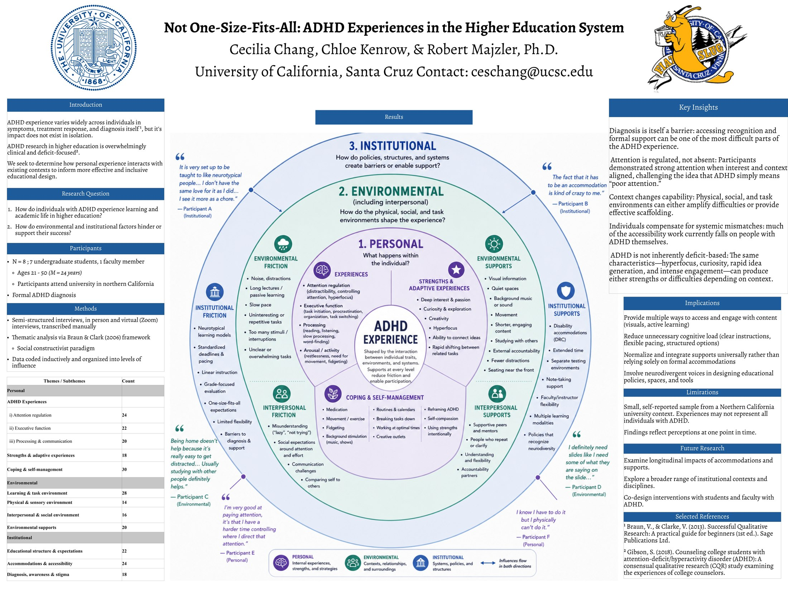
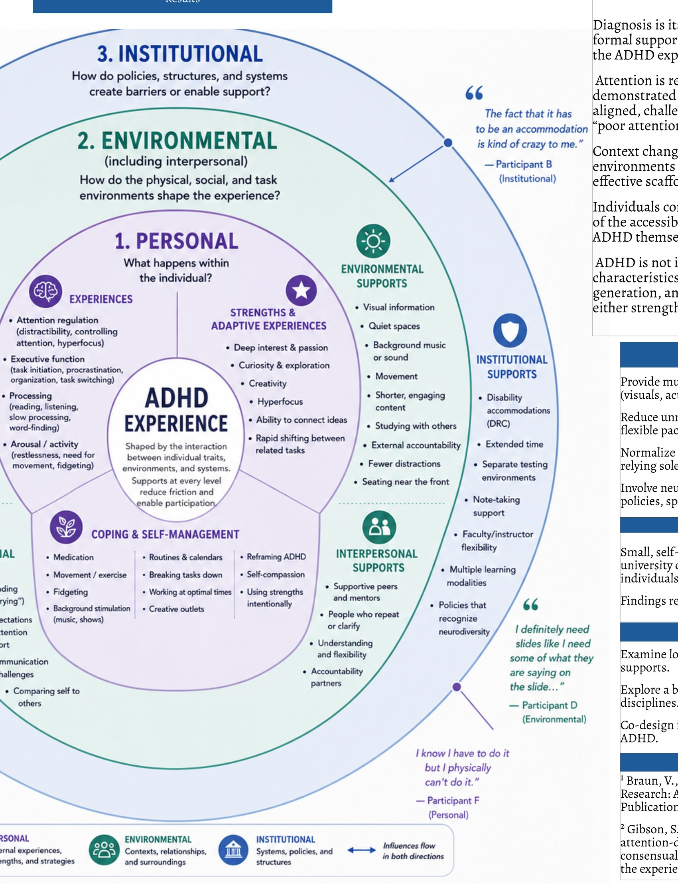

A qualitative research study on how ADHD shapes the academic experience in higher education, and a tiered framework to inform institutions how to support students who learn differently.
Co-authored with Chloe Kenrow, advised by Robert Majzler, Ph.D. — grew out of PSYC 182: Qualitative Research Methods, UCSC.
Existing ADHD research isolated single variables — counseling access, stigma, self-compassion — each in a controlled, contained way. Missing was the first-person version: what does ADHD actually feel like day to day inside a system not built for it, and what would need to change? Chloe Kenrow and I scoped that into two research questions:
RQ1 — How do individuals with ADHD experience learning and academic life in higher education?
RQ2 — How do environmental and institutional factors hinder or support their success?
RQ1 surfaces the lived experience; RQ2 turns it into something an institution can act on.
Why interviews, not a survey: ADHD presentation varies enough person-to-person that a Likert-scale instrument would have flattened exactly the variability we needed to see. We traded breadth for depth.
Sample & fieldwork: n=8 (7 undergraduates, 1 faculty member), ages 21–50, all with a formal ADHD diagnosis, at universities in Northern California. Semi-structured interviews in person and over Zoom, transcribed by hand.
Analysis: inductive thematic analysis (Braun & Clarke, 2013) — coded line by line, letting categories build from what people actually said. 12 subthemes, organized into 3 levels of influence: personal, environmental, institutional.
The data didn't agree with itself — and that was the finding.
I expected one unified "ADHD experience" to emerge. Instead I got eight people who barely resembled each other — hyperfocus and upside for one, a year-long diagnosis slog for another, an executive-function reframe for a third. "Variability among individuals" became our single most-coded theme. Learning to let a theme be "it depends," without treating that as a failure of analysis, was the real shift.
Naming where the variability lived turned it into something actionable.
The contradictions kept showing up, but they clustered: some friction lived inside a person's own head, some in a room or a syllabus, some in policy nobody in that room could change. Organizing those as three levels — personal, environmental, institutional — turned "it depends" into "it depends on which of three systems you're looking at," a finding an institution can actually build against.
The actual coding pass and deck slide behind the polish above.

The first coding pass — the same twelve subthemes the poster later uses, before they had a shape.

An early slide, built around a flat theme list we later abandoned for the three-level framework below.
Three levels of influence, radiating out from the individual to the institution.
"I know I have to do it but I physically can't do it." — Participant F
Attention regulation, executive function, and real adaptive upside (hyperfocus, rapid idea-connection). Participants showed strong attention when interest and context aligned — challenging the idea that ADHD simply means "poor attention."
"Being home doesn't help because it's really easy to get distracted... Studying with other people definitely helps." — Participant C
Noise, pacing, peer support, task design. The same person looked meaningfully more or less capable depending on the room, the syllabus, and who else was in it.
"It is very set up to be taught to like neurotypical people... I don't have the same love for it as I did... I see it more as a chore." — Participant A
Standardized deadlines, one-size-fits-all evaluation, and an accommodations process that assumes a diagnosis is easy to get. Most of the accessibility work currently falls on the person with ADHD, not the system.
Turning a coding table into something a stranger could understand in ten seconds, walking past a poster board.
A poster session gives you about ten seconds before someone decides whether to stop. Our data was a spreadsheet-shaped table of twelve subthemes — accurate, and unreadable at a glance. The design problem: make the structure of the finding visible before anyone reads a word.

The full poster as presented — Cecilia Chang, Chloe Kenrow, & Robert Majzler, Ph.D., UCSC.

The diagram itself, close up — friction and support mirrored at every ring, quotes anchored to their level.
Nested circles, not a flat grid. Institutional context surrounds environmental context, which surrounds the individual — concentric rings let the diagram argue that point before anyone read a label.
A deliberate color gradient. Purple → green → blue moves the eye outward with the rings, and stays legible in black-and-white and for colorblind viewers.
Icons before bullets. Each subtheme got a simple pictogram, readable from six feet away.
Quotes on the perimeter. Six participant quotes anchored to the diagram's edge — a real voice in someone's own words is what makes people stop and read.
The reframe: not "how do we help someone adapt to the system," but "how might we design the system to support different ways of learning." Four recommendations, scoped to who owns each fix.
Provide multiple ways to access and engage with content. Came up across nearly every interview — not as an accommodation request, but as the difference between material landing or not.
Reduce unnecessary cognitive load. Clear instructions, flexible pacing, and structured options lowered friction without lowering rigor.
Normalize supports universally rather than relying solely on formal accommodations. Right now, most of that work falls on the person with ADHD to identify, request, and justify.
Involve neurodivergent voices in designing the policies, spaces, and tools meant to support them — every recommendation above came directly out of participant interviews.
Two things I'd change with what I know now.
I'd sketch the visual framework earlier, not after.
The nested-circle model didn't show up until we were already building the poster. Visualizing relationships between codes earlier would have surfaced "levels of influence" sooner, instead of under deadline pressure.
I'd add a second coder for inter-rater reliability.
By the time I was deep in the transcripts, I was pattern-matching almost too well. A second, independent coder comparing codes against mine would have been a real check on that bias.
This project is also why I ended up in UX research instead of staying in direct clinical work — I liked helping one person, but liked it more when that conversation explained a pattern that could inform how an institution serves the next hundred. That's the instinct behind every study I scope now, and the lens I bring to my current research at Healyan.